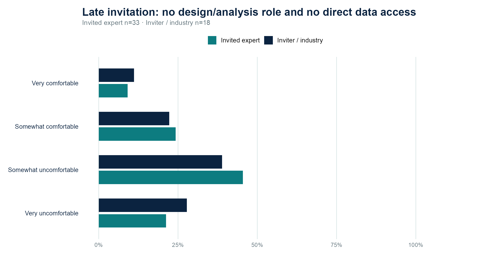
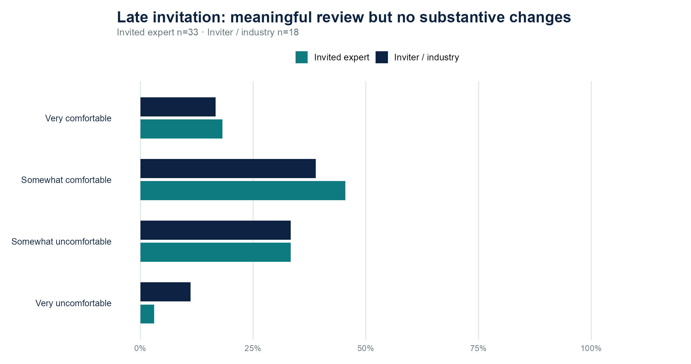
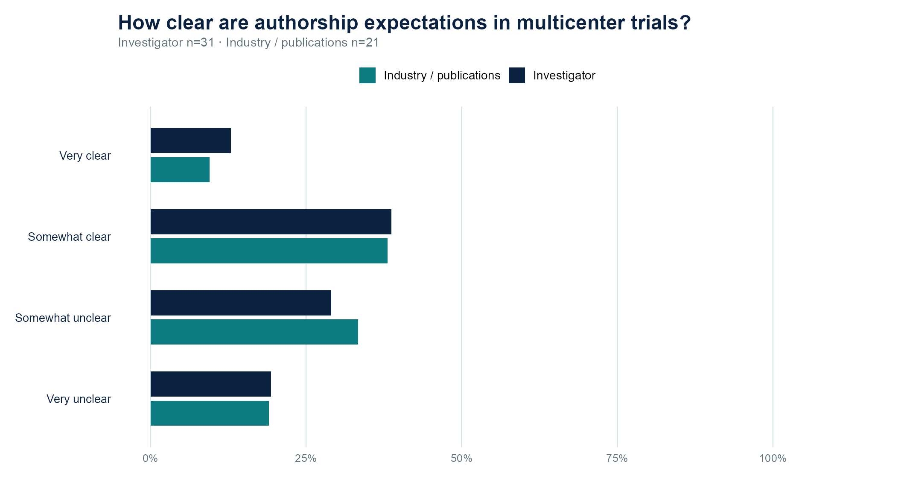
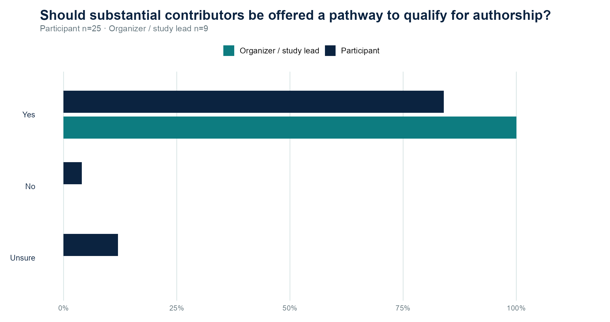
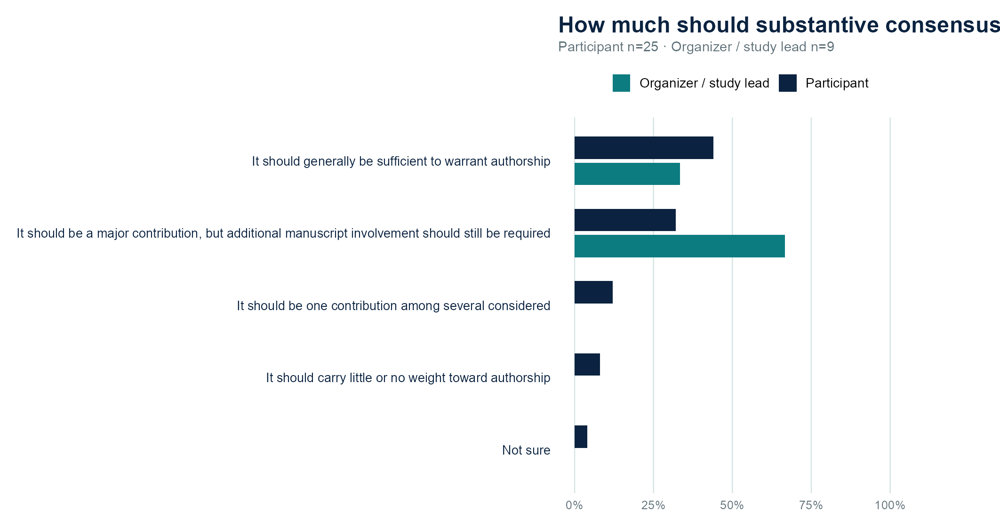
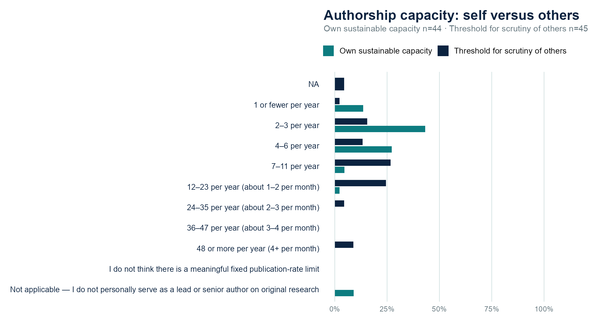
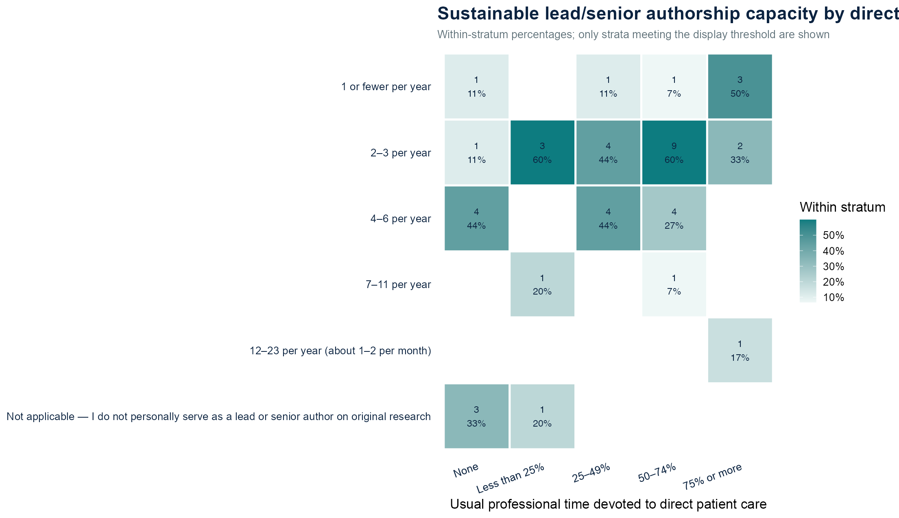

The conversation
On October 28, 2026, the SoCO Research Workshop brought clinicians, investigators, an editor, and industry colleagues together to discuss how authorship decisions are made. Three cases anchored the conversation: the clinician whose patients generated the data, the expert invited after a draft exists, and the investigator navigating a multicenter trial.
The discussion repeatedly returned to a practical problem: people can know the same authorship criteria and still disagree about the contribution required, the opportunity to make that contribution, or the order in which contributors should appear. Hearing how colleagues have handled those situations was as important as reviewing the rules.
The room
From the October 28 meeting attendance records. Survey response counts reflect the people who answered each question.
How do we give people a meaningful opportunity to contribute, make decisions understandable, and revisit them as the work changes?
A shared starting point
The workshop used ICMJE’s four-part framework: substantial input into the study’s design, data collection, analysis, or interpretation; drafting or substantive intellectual review; approval of the final manuscript; and accountability for questions about its accuracy or integrity. All four are required. The author group should include everyone who fulfills them, and people meeting the first requirement should have an opportunity to complete the manuscript-related requirements. [1]
The opening distinguished that threshold from COPE’s publication-ethics guidance, CRediT’s vocabulary for describing contributions, and individual journal policies. CRediT describes work performed; it does not independently decide who qualifies as an author. [2] [3]
Ade Adamson described what an editor can realistically assess. A journal sees the submitted paper and contribution statements, not every interaction that produced them. Mike Wong emphasized the culture and leadership through which groups apply the criteria. Their comments placed much of the practical responsibility within the research team, before submission.
What the community survey added
The distinction between familiarity and use mattered. Familiarity was common, but a smaller group reported being very familiar, and use of formal guidance varied. These were self-reports from a community survey, not an audit of whether contributors met authorship requirements.
Question-specific denominators are shown throughout the figures. The survey used several perspective-based question sets; answering an investigator or publication-team question does not by itself verify someone’s employment sector. The complete chart collection, including questions not reached during the meeting, is available below.
Case 1 · Clinical contribution and a meaningful opportunity
The first case concerned a clinician whose patient care substantially supported a retrospective study but who had not participated in its design, analysis, interpretation, or writing. The central question was what a meaningful invitation into the research should look like.
In the survey: 26 of 35 respondents (74%) selected the view that care alone is insufficient but clinicians should generally be offered an opportunity to contribute further. Among the 33 respondents to the clinician-reaction question, 26 (79%) would be somewhat or very bothered if they were not approached.
Kevin Emerick described moving from late requests to approve a finished case series toward engagement when the question is first taking shape. Examples included continuing a conversation after tumor board, setting aside a project or lab meeting, and offering office hours to review the data and challenge the interpretation. David Miller described an office-hours invitation that resulted in an engaged author group.
Elizabeth Buchbinder emphasized the research work embedded in clinical practice: obtaining tissue, arranging banking consent, supporting ctDNA collection, and documenting information so that it can be analyzed reliably. These contributions can be easy to miss if a project team first contacts clinicians when the manuscript is nearly complete. Early involvement was discussed as a way to improve the science as well as clarify credit.

Case 2 · The late invited expert
This case began with a different relationship to the work: an academic expert had not treated the patients or participated in the study, and the manuscript was already substantially drafted. The question was whether enough meaningful intellectual work remained for the expert to qualify and accept responsibility.
In the survey: 22 of 33 respondents (67%) were somewhat or very uncomfortable accepting late authorship without direct access to the underlying data. In a separate question, 18 of 33 (55%) said they had declined a late invitation because they did not feel their contribution justified authorship.
Wong’s personal test was whether he could defend the paper in front of peers. Buchbinder distinguished an invitation to help shape interpretation from an invitation to endorse a finished product. Daniel Coit offered another perspective: a rigorous internal review can have intellectual value, even when the reviewer ultimately endorses the existing analysis. The group did not settle a universal threshold for how much interpretive input is enough.
Howard Kaufman described legitimate reasons to seek expertise outside an existing team and the value of doing so early. He also explained the internal reviews that may surround industry publications, including scientific, publication-planning, conflict-of-interest, partner, and intellectual-property considerations. The discussion made clear why timing, access, and freedom to challenge conclusions belong in the invitation itself.

Case 3 · Clinical trials, author order, and competing expectations
The third case expanded the problem across investigators, sites, specialties, and publication teams. Buchbinder described how authorship conversations can be more direct in small early-phase studies and more remote in larger programs. Expectations about enrollment, scientific input, and lead roles may develop well before a manuscript appears.
In the survey: only 4 of 31 respondents (13%) to the investigator-expectations question said authorship expectations were very clear. The separate publication-team question had 21 responses. Those are question-specific response counts, not verified counts of academics and industry employees.
Raj Patel described how publication planning may consider enrollment, data quality, scientific insights, relevant expertise, and earlier conversations with the clinical team. He identified opportunities to contribute during a trial: investigator meetings, suggestions for additional analyses, and communication with clinical or medical teams. These were descriptions of practice and experience, not a single policy governing every sponsor.
The exchange also exposed difficult tradeoffs. Additional authors require coordination, while a one-author-per-site convention can obscure contributions from surgeons, pathologists, and other specialists. The chat raised equity across sites and the risk of rewarding whoever presses hardest. Author order drew particular concern, including unclear decision rules and the repeated selection of established names for leading positions.
Buchbinder raised the implications for advancement of other investigators. Kamaneh Montazeri described the importance of negotiating multidisciplinary roles early. Danielle Brazel connected publication pressure to trainee incentives, and Wong argued for assessing collaborative success more directly. These comments widened the discussion from manuscript administration to the institutions that assign value to a byline.

The acknowledgment debate remained open
Daniel Coit proposed more deliberate recognition of contributors whose work mattered but who did not fulfill all four authorship requirements. Later discussion returned to surgeons, pathologists, referring clinicians, and others whose contributions can be difficult to see in a conventional byline.
Participants differed over whether acknowledgment offers meaningful recognition when promotion and other academic rewards remain tied to authorship. Miller argued for taking that recognition more seriously. Kenneth Tsai emphasized that an individual’s good intentions cannot change institutional incentives and noted that several members of a research team can be overlooked.
The exchange left two questions worth carrying forward: how to record important work fairly now, and how institutions could recognize that work more fully. Acknowledgment cannot replace authorship someone has earned. When non-author contributors are named, their contribution and permission to be acknowledged also matter. [1]
Four habits for the next collaboration
Miller closed by drawing together four process habits raised during the discussion:
Earlier
Invite people while they can still shape the question, analysis, interpretation, or manuscript.
Explicitly
State expected contributions, responsibilities, and the basis for inclusion and leading roles.
Transparently
Explain how decisions about inclusion and author order are made, including changes to the plan.
Revisited
Return to the plan as contributions and availability change.
These habits offer a practical way to start the next conversation. They also leave room for what participants valued throughout the session: a colleague’s experience to draw on when an invitation or authorship decision feels difficult.
Discussion leads brought editorial, clinical, investigative, and publication-team perspectives to the cases.
The recorded exchange also included substantive contributions from Vishal Patel, Daniel Coit, Danielle Brazel, Kamaneh Montazeri, and Kenneth Tsai, alongside the questions and perspectives shared in the chat. Thank you to everyone who participated and completed the survey.
Who joined us? 43 colleagues · alphabetical roster
An alphabetical roster of colleagues who joined the workshop.
- Adewole S. Adamson
- Adewunmi O. Adelaja
- Ahmad Naim
- Ajay Nair Sharma
- Aleigha R. Lawless
- Alfredo Covelli
- Alyssa Lee
- Cara Trulli
- Christine C. Cimoch
- Christopher Zajac
- Daniel Coit
- Danielle M. Brazel
- David M. Miller
- Desiree Ratner
- Elizabeth I. Buchbinder
- Frances Collichio
- Govind Warrier
- Gregory Norigian
- Howard L. Kaufman
- Isaac Brownell
- Jessica L. Fewkes
- Jonathan A. Dyer
- Joseph Grossman
- Juliane Andrade Czapla
- Kamaneh Montazeri
- Kenneth Y. Tsai
- Kevin S. Emerick
- Laura Ferris
- Lauren Fleshner
- Leon Sakkal
- Lisa Zaba
- Manisha Thakuria
- Maya Dimitrova
- Mehran Behruj Yusuf
- Michael K. K. Wong
- Patrick Kurpaska
- Raj Patel
- Sameer Gupta
- Sara Behbahani
- Suzanne Topalian
- Tatyana Sharova
- Vishal Anil Patel
- William J. Benjamin IV
All provided survey figures
This collection preserves the manifest-linked October 28 survey snapshot: 50 question-level figures and 7 comparison or stratified figures. It includes topics that were not discussed during the workshop. Several charts are alternate views of a question, so the figure count is not a count of independent survey questions.
Results describe the people answering each item. Denominators differ by question, multi-select items may not sum to 100%, and category percentages are rounded. The supplied files contain chart exports rather than person-level survey responses; they do not establish eligibility routing or verified employment groups for the scenario branches.
57 figures available
Who answered and what authorship means 15 figures
Suppose authorship had no effect on hiring, promotion, funding, compensation, or professional reputation. How important would being an author still be to you?

Compared with other meaningful professional contributions—such as clinical care, research, teaching, mentorship, collaboration, program or product development, and organizational leadership—how much weight does authorship receive in career advancement and professional recognition in your environment?

Of the reasons you selected, how would you rank their importance to you?

Why is authorship valuable to you professionally?

Areas of authorship experience

Which best describes your current career stage?

Career stage: government respondents

Which best describes your current role level?

Current areas of work, ranked

Current areas of work

Approximately what proportion of your usual professional time is devoted to direct patient care?

Have you ever served in a formal editorial role for a peer-reviewed journal?

Professional background

Approximately how many peer-reviewed publications have you authored?

Which best describes your primary professional setting?

Guidelines and editorial perspectives 4 figures
What prompts an editor to examine authorship more closely?

Respondents’ journal and editorial roles

How familiar are you with the International Committee of Medical Journal Editors (ICMJE) authorship criteria?

How often do you use the ICMJE criteria or other formal authorship guidance when making authorship decisions?

Case 1 · Clinical contribution 4 figures
If you were not approached about authorship in that situation, how bothered would you be?
A retrospective study is performed using clinical data from patients seen within a practice or multidisciplinary group. Some clinicians cared for many of the patients whose records form the dataset but were not involved in developing the research question, designing the study, analyzing the data, or drafting the manuscript.

If a substantial portion of the study population came from patients you cared for, how strongly would you feel that you should be offered an opportunity to participate as an author?
A retrospective study is performed using clinical data from patients seen within a practice or multidisciplinary group. Some clinicians cared for many of the patients whose records form the dataset but were not involved in developing the research question, designing the study, analyzing the data, or drafting the manuscript.

Which best reflects your view?
A retrospective study is performed using clinical data from patients seen within a practice or multidisciplinary group. Some clinicians cared for many of the patients whose records form the dataset but were not involved in developing the research question, designing the study, analyzing the data, or drafting the manuscript.
If clinicians were substantially responsible for the care that generated the data used in the study, how strongly do you feel an obligation to offer them an opportunity to contribute toward authorship?
A retrospective study is performed using clinical data from patients seen within a practice or multidisciplinary group. Some clinicians cared for many of the patients whose records form the dataset but were not involved in developing the research question, designing the study, analyzing the data, or drafting the manuscript.

Case 2 · The late invited expert 9 figures
Late invitations: comfort accepting authorship

Have you ever declined a late invitation to authorship because you did not feel your contribution justified authorship?
A recognized expert is invited to review an abstract or manuscript shortly before submission. They were not involved in the original study.
Accepting late authorship when no substantive changes are made

Suppose you were not involved in the study design or analysis and did not have direct access to the underlying data. How comfortable would you be accepting authorship?
A recognized expert is invited to review an abstract or manuscript shortly before submission. They were not involved in the original study.

Considerations when inviting an expert late

Primary reason for a late expert invitation

Offering late authorship when no substantive changes are made

Suppose the invited expert was not involved in the study design or analysis and did not have direct access to the underlying data. How comfortable would you be continuing to offer authorship?
A recognized expert is invited to review an abstract or manuscript shortly before submission. They were not involved in the original study.

Late invitations: comfort offering authorship

Case 3 · Clinical trial authorship 12 figures
Before agreeing to participate in a multicenter clinical trial, how clear are you usually about whether your contribution could lead to authorship?
For investigators participating in multicenter trials, two questions are often left unclear: Will my contribution lead to authorship? If so, where will I appear on the paper?
When authorship expectations are discussed before or during a trial, who most often initiates that conversation?
For investigators participating in multicenter trials, two questions are often left unclear: Will my contribution lead to authorship? If so, where will I appear on the paper?

Who should be primarily responsible for initiating the authorship conversation?
For investigators participating in multicenter trials, two questions are often left unclear: Will my contribution lead to authorship? If so, where will I appear on the paper?

In your experience, which factor most strongly determines whether an investigator is included as an author on the primary trial publication?
For investigators participating in multicenter trials, two questions are often left unclear: Will my contribution lead to authorship? If so, where will I appear on the paper?

Investigator perspective: what drives author order?

Investigator perspective: one-author-per-site limits

Before a site agrees to participate in a multicenter clinical trial, how clear are the authorship expectations typically made to investigators?
For investigators participating in multicenter trials, two questions are often left unclear: Will my contribution lead to authorship? If so, where will I appear on the paper?

When authorship expectations are discussed before or during a trial, who most often initiates that conversation?
For investigators participating in multicenter trials, two questions are often left unclear: Will my contribution lead to authorship? If so, where will I appear on the paper?

Who should be primarily responsible for initiating the authorship conversation?
For investigators participating in multicenter trials, two questions are often left unclear: Will my contribution lead to authorship? If so, where will I appear on the paper?

When deciding which trial investigators are included as authors on the primary publication, which consideration most often carries the greatest weight?
For investigators participating in multicenter trials, two questions are often left unclear: Will my contribution lead to authorship? If so, where will I appear on the paper?

Publication-team perspective: what drives author order?

Publication-team perspective: one-author-per-site limits

Publication volume and career incentives 2 figures
Without knowing more about a person's role or circumstances, at what sustained rate of lead or senior authorship on original research papers would publication volume alone prompt you to look more closely at whether the responsibilities of authorship were actually being met?
For these questions, “lead or senior author” means an authorship position that ordinarily signals substantial intellectual responsibility—for example, first/co-first or senior/last author, where applicable. Think about a publication rate sustained over several years rather than a single unusually productive year.

Thinking about your actual professional responsibilities—including clinical, research, administrative, teaching, and other work—what is the highest sustained rate at which you believe you could serve as a lead or senior author on original research papers while still meeting the intellectual contribution, critical review, final approval, and accountability responsibilities expected of that role?
For these questions, “lead or senior author” means an authorship position that ordinarily signals substantial intellectual responsibility—for example, first/co-first or senior/last author, where applicable. Think about a publication rate sustained over several years rather than a single unusually productive year.

Delphi · Survey results for the reserve case 4 figures
The Delphi case was held in reserve and was not discussed in the recorded session. These are its survey results.
If a participant's consensus contributions were substantial but they had not yet met the full authorship criteria, should they generally be offered an opportunity to review or revise the manuscript, contribute intellectually, and qualify for authorship?
A Delphi or consensus project includes a group of experts who complete multiple rounds of rating, commenting, and refining statements. Their input helps shape the final recommendations. A smaller writing group then analyzes the results and prepares the manuscript.

How much weight should substantive participation in a Delphi or consensus process carry toward authorship?
A Delphi or consensus project includes a group of experts who complete multiple rounds of rating, commenting, and refining statements. Their input helps shape the final recommendations. A smaller writing group then analyzes the results and prepares the manuscript.

If a participant's consensus contributions were substantial but they had not yet met the full authorship criteria, should the writing group generally offer them an opportunity to review or revise the manuscript, contribute further, and qualify for authorship?
A Delphi or consensus project includes a group of experts who complete multiple rounds of rating, commenting, and refining statements. Their input helps shape the final recommendations. A smaller writing group then analyzes the results and prepares the manuscript.

Delphi organizers: how much should participation count?

Comparisons and stratified figures 7 figures
Perspective comparisons show separate question sets. They should not be read as validated, mutually exclusive employment-sector groups. The stratified figure uses the grouping named in its chart.
Late invitations without direct data access: question-set comparison

Late invitations without substantive changes: question-set comparison

Clinical trials: clarity across the two question sets

Delphi: opportunities to qualify across the two question sets

Delphi: how participation is weighted across question sets

Publication volume: self-assessment and scrutiny of others

Publication capacity stratified by reported patient care

Record and references
This recap draws on the meeting transcript, supplied chat excerpts, and the manifest-linked survey figures. Participant perspectives are paraphrased unless quotation marks are used. The exchange included disagreement and did not produce a formal consensus statement.